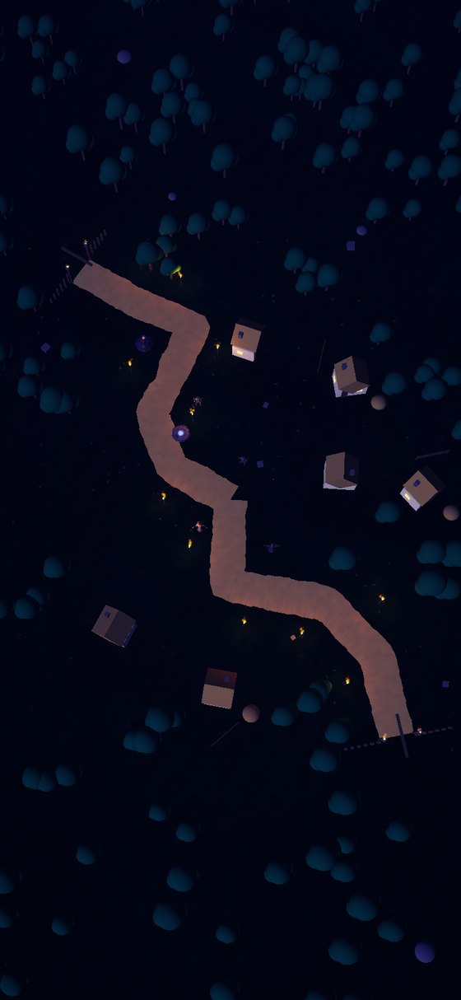
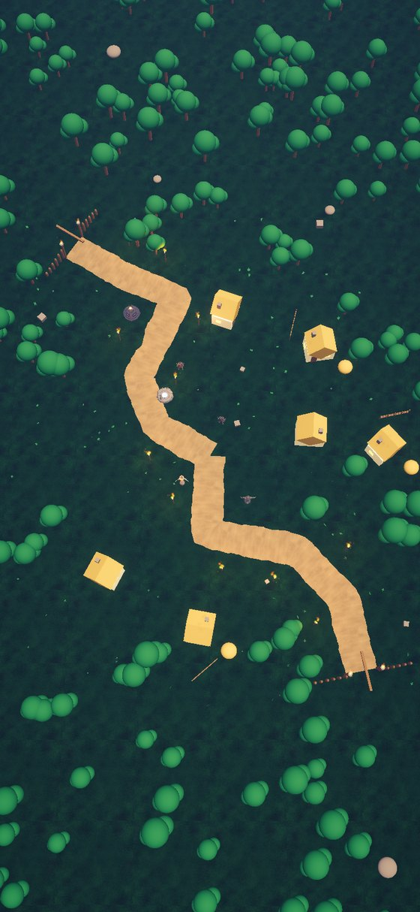
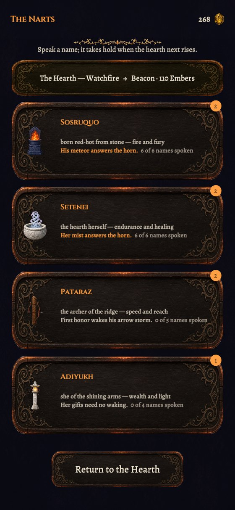
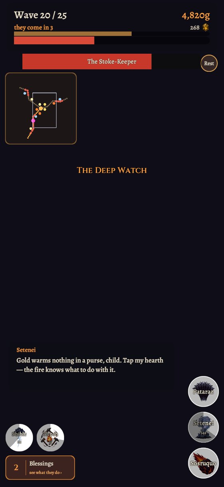

A lane defense that keeps your clock
One-handed, portrait, no timers between you and the fight. Everything below is in the build.
The fire is in the middle
Roads come at the hearth from every quarter — one while you are learning, three deep in the valley. Adding a road is the largest step the game takes, and each wave names the one it is pushing down before it arrives.
Choose your own ground
No pads to pick between. Any legal earth beside a road takes a shrine, and the board grows as the night runs long — a stone every few waves, so a twenty-minute telling never fills up halfway through.
Four ancestors, four answers
Sosruquo's fire, Pataraz's arrows, Setenei's mist, Adiyukh's light. Each shrine does a different job on the road, and each hero's called answer is worth what you have actually built — more shrines, or higher ones, is a bigger answer.
The valley keeps your hour
The map is lit for the time on your phone, and keeps being lit for it. Take the road at noon and you fight in daylight; play long enough to cross a real dusk and the dark comes down over you as it does outside.
Embers are memory
A fallen hearth is not a loss, it is a telling that ended. What it earns is spent honoring the names of the absent heroes — and every rank honored writes a verse into the codex.
The night is told in watches
Every ten waves the sky turns, the roster changes and a champion closes the chapter. Past the last watch the night begins again, harder, and is named again.
Chapters of one long night
Each road is a chapter of the same Long Night, and each of its levels has its own length, its own weight and its own map — generated, and the same map every time anyone walks it.
Where the build stands today. The valley is still being cut — roads, levels and the nights past them are all still going in.




The heroes never walk on screen
They are away, in the war beyond the mountains. Honor a name and something of them answers across it.
Setenei
Eternally young, and the only one still at her fire. She is never afraid — dry, warm and unbreakable. Her mist settles over every road at once.
Sosruquo
Born red-hot from rock, and the one who stole the fire from the giants in the first place. He knows what it is worth. A burning boulder falls from beyond the ridge.
Pataraz
The archer of the ridge. Arrows fall from a range no bow should reach, and every shrine raised in his name looses its own storm.
Adiyukh
She whose hands lit the road home for travellers. Her light finds what the dark was keeping, and pays for it.